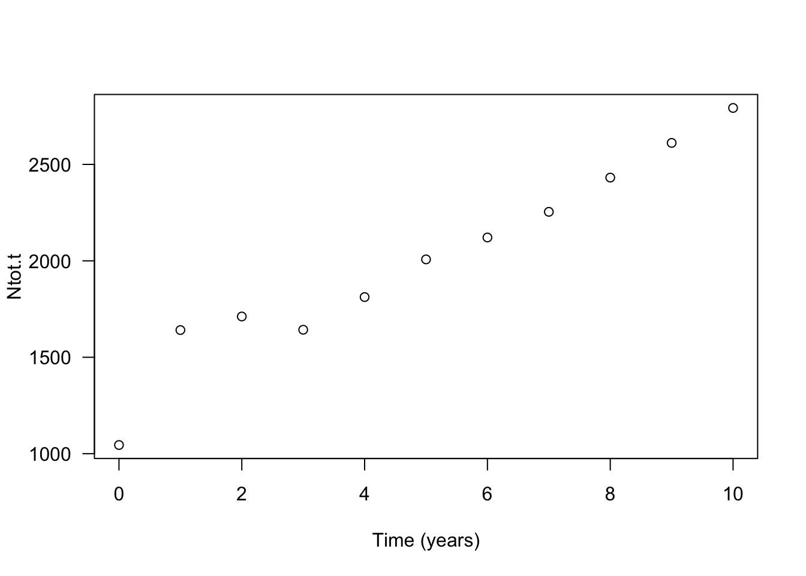
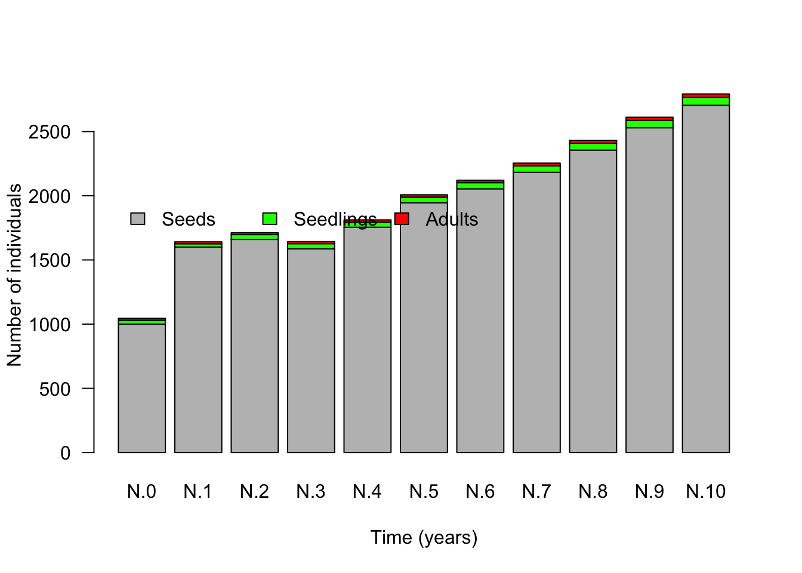
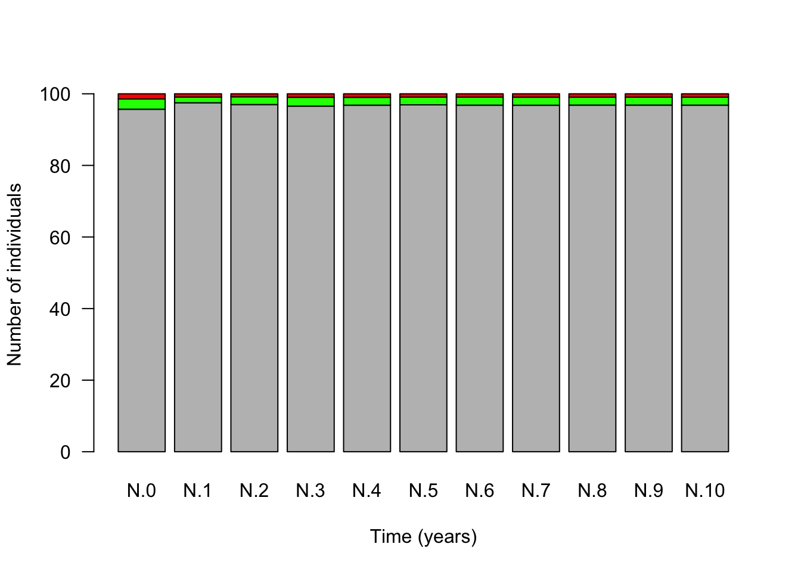
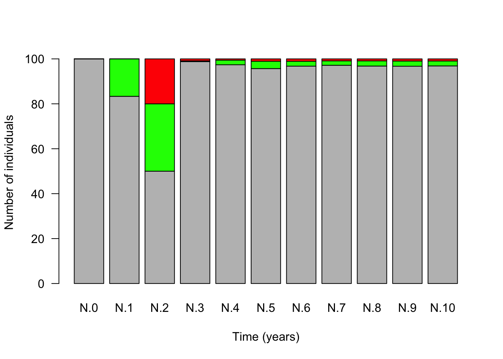
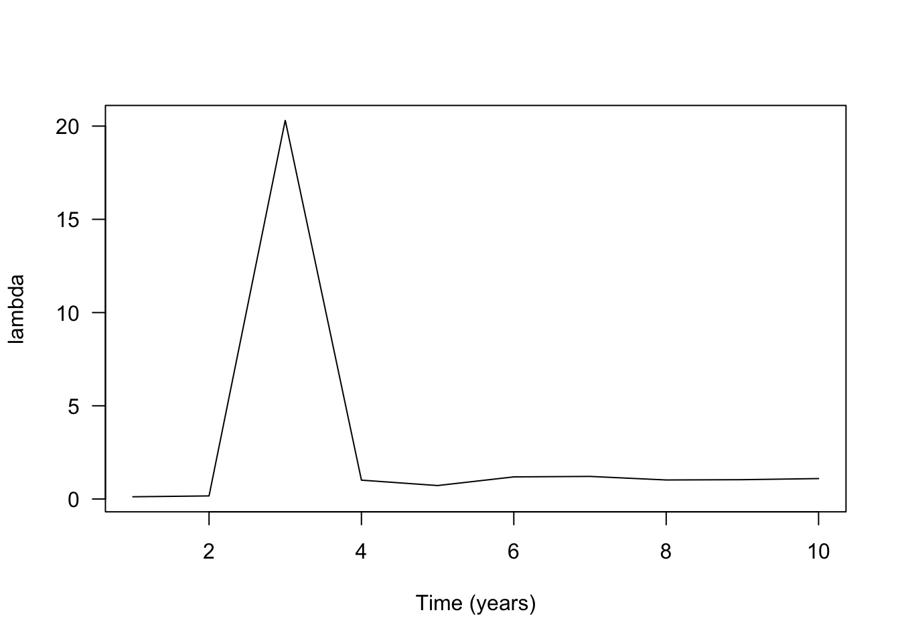
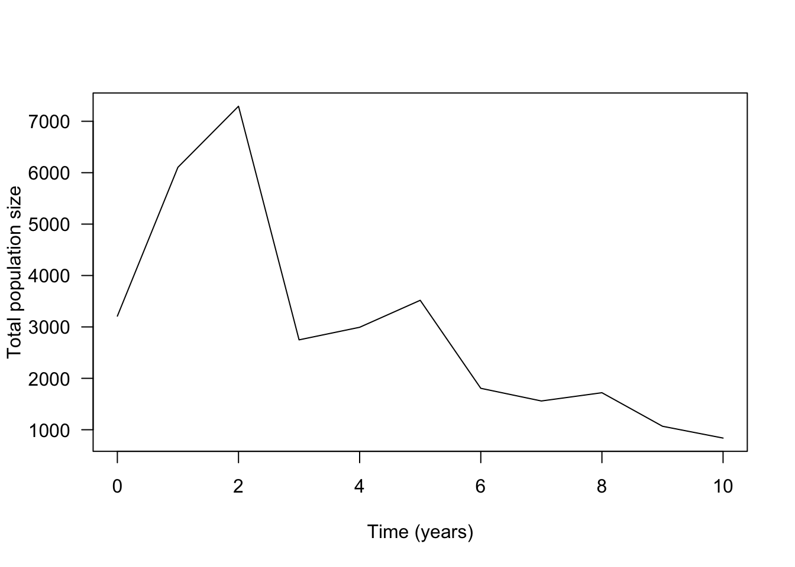
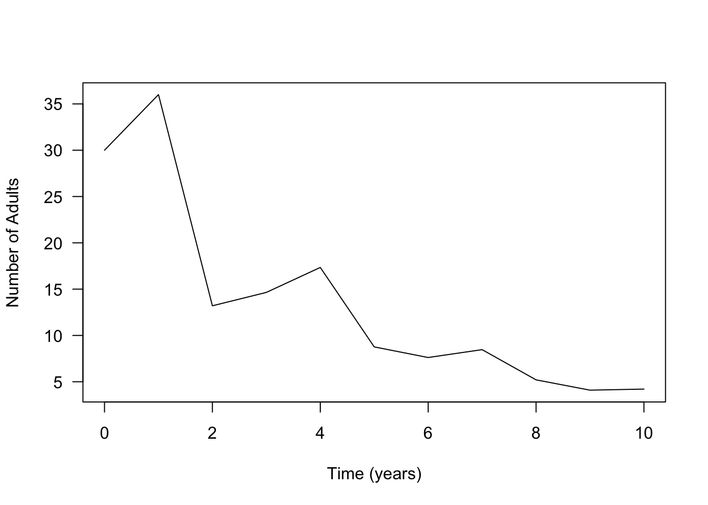
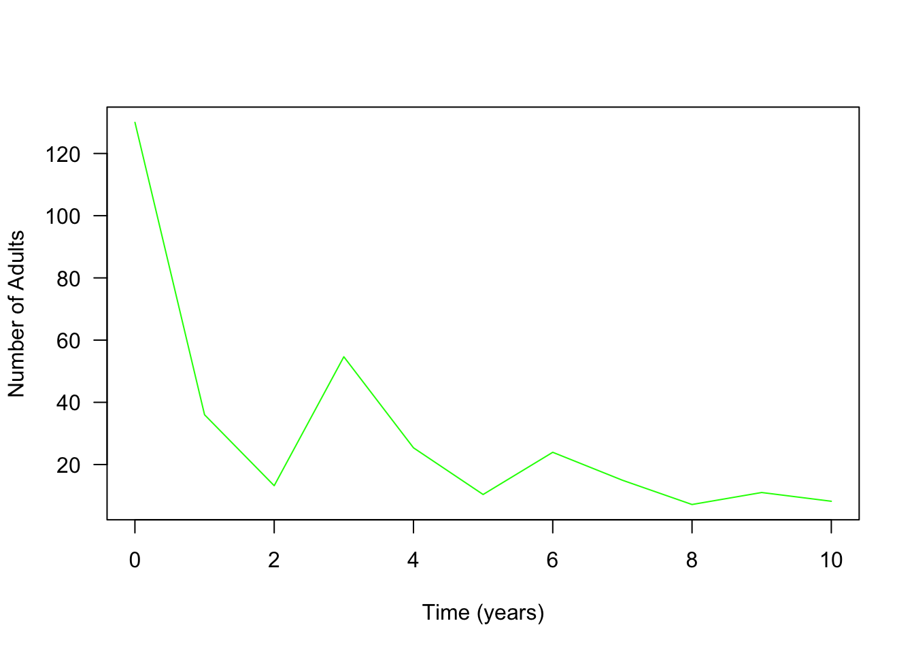

Exercise: Structured populations - Solutions
Population projection
Using the example from the lecture, you will in this exercise apply matrix multiplication to project population dynamics for some time steps into the future. At the end of this part, you should complet the following tasks.
- Project the population ten years into the future and describe how the population changes in both absolute and relative numbers.
Population size fluctuates until the fourth time step and from then on shows a montonic increase. If we would project the time series for more than ten time steps we could see that the increase in total population size is exponential. The distribution of individuals over the three stages also fluctuates slightly during the first time steps but is almost constant from the fourth time step onwards. This is in fact an important property of matrix models. Once the population starts to grow (or decline) exponentially the population also reaches a stable stage distribution: the proportion of individuals in the different stages stays constant, here given by (0.968, 0.022, 0.01).
- Compute the growth factor \(\lambda\) for ten years and describe how it changes over time.
The observation under (1) is reflected in the behavior of the \(\lambda\): this annual growth factor fluctuates slightly for the first four time steps but then stabilizes around 1.07. In other words, from the fourth time step onwards the population grows from one year to the next by a fixed factor 1.07.
- Do the computations under (1) and (2) for three different initial population vectors \(N_0\), namely: \(N_0=(1000, 30, 15)\), \(N_0=(10, 0, 0)\) and \(N_0=(0, 10, 0)\). How do the results differ from each other when using different starting vectors?
Changing the initial population vector only affects the dynamics during the first couple of time steps in which the dynamics fluctuate. Once the fluctuations have disappeared all populations grow with the same annual grwoth factor \(\lambda\approx 1.07\) and reach the same stable stage distribution (0.968, 0.022, 0.01). For the choice \(N_0=(10, 0, 0)\) we can see that the initial fluctuations are more extreme and that it takes at least until the sixth time step before the fluctuations disappear.
The following code shows how to define a population projection matrix in R. We here use the three-by-three matrix from the lecture.
transition.matrix <- matrix(c(0.1,0,100,0.02,0.2,0,0,0.2,0.6), nrow=3, ncol=3, byrow=T)
transition.matrix## [,1] [,2] [,3]
## [1,] 0.10 0.0 100.0
## [2,] 0.02 0.2 0.0
## [3,] 0.00 0.2 0.6We enter the three-dimensional vector describing the initial population composition \(N_0\) as a matrix consisting of one column and three rows (in other words, as a column vector).
N.0 <- matrix(c(1000, 30, 15), nrow=3, ncol=1, byrow=T)
N.0## [,1]
## [1,] 1000
## [2,] 30
## [3,] 15In order to obtain the vector describing the population composition
one time step into the future, we multiply the population projection
matrix transition.matrix from the right with the current
population vector N.0. This type of multiplication is
executed in R using the symbol %*%.
(N.1 <- transition.matrix %*% N.0) # the parentheses around a command make that the vector N.1 is immediately shown, that is, without explicitly asking for it as was done in the two previous commands.## [,1]
## [1,] 1600
## [2,] 26
## [3,] 15Below the results for the first 10 time steps
N.2 <- transition.matrix %*% N.1
N.3 <- transition.matrix %*% N.2
N.4 <- transition.matrix %*% N.3
N.5 <- transition.matrix %*% N.4
N.6 <- transition.matrix %*% N.5
N.7 <- transition.matrix %*% N.6
N.8 <- transition.matrix %*% N.7
N.9 <- transition.matrix %*% N.8
N.10 <- transition.matrix %*% N.9Next, compute the total number of individuals at time
t=0, t=1 until t=10 using the
command sum().
Ntot.0 <- sum(N.0)
Ntot.1 <- sum(N.1)
Ntot.2 <- sum(N.2)
Ntot.2 <- sum(N.2)
Ntot.3 <- sum(N.3)
Ntot.4 <- sum(N.4)
Ntot.5 <- sum(N.5)
Ntot.6 <- sum(N.6)
Ntot.7 <- sum(N.7)
Ntot.8 <- sum(N.8)
Ntot.9 <- sum(N.9)
Ntot.10 <- sum(N.10)If you have computed Ntot for the first ten time steps, you
can add them to the plot by changing c(0:2) to
c(0:10) (the points on the x-axis) and
y=c(Ntot.0, Ntot.1, Ntot.2) to
y=c(Ntot.0, Ntot.1, Ntot.2, Ntot.3, Ntot.4, Ntot.5, Ntot.6, Ntot.7, Ntot.8, Ntot.9, Ntot.10)
(the values on the y-axis) in the above code.
plot(x=c(0:10), y=c(Ntot.0, Ntot.1, Ntot.2, Ntot.3, Ntot.4, Ntot.5, Ntot.6, Ntot.7, Ntot.8, Ntot.9, Ntot.10), xlab="Time (years)", ylab="Ntot.t", las=1)
Next, let’s have a look at the population composition. How is the total number of individuals distributed over the different life-history states? For this, we can plot the population vectors in form of a bar plot.
par(xpd=T) # allow plotting on margin (for legend)
barplot(cbind(N.0, N.1, N.2, N.3, N.4, N.5, N.6, N.7, N.8, N.9, N.10), las=1, col=c("grey", "green", "red"), names.arg=c("N.0", "N.1", "N.2", "N.3", "N.4", "N.5", "N.6", "N.7", "N.8", "N.9", "N.10"), ylab="Number of individuals", xlab="Time (years)")
legend("topleft", x=0.1, y=2000, bty="n", legend=c("Seeds", "Seedlings", "Adults"), fill=c("grey", "green", "red"), horiz=T)
It is also common (and informative) to plot the population vectors as relative numbers to show what fraction of the total population belongs to each life history state. For this we have to divide the number of individuals in each state by the total population size at that time step.
barplot(cbind(N.0/sum(N.0), N.1/sum(N.1), N.2/sum(N.2), N.3/sum(N.3), N.4/sum(N.4), N.5/sum(N.5), N.6/sum(N.6), N.7/sum(N.7), N.8/sum(N.8), N.9/sum(N.9), N.10/sum(N.10))*100, col=c("grey", "green", "red"), las=1, names=c("N.0", "N.1", "N.2", "N.3", "N.4", "N.5", "N.6", "N.7", "N.8", "N.9", "N.10"), ylab="Number of individuals", xlab="Time (years)")
legend(x=0.1, y=120, bty="n", legend=c("Seeds", "Seedlings", "Adults"), fill=c("grey", "green", "red"), horiz=T)
N.10/sum(N.10) # vector giving the distribution at the end of the time series## [,1]
## [1,] 0.968335286
## [2,] 0.022255192
## [3,] 0.009409522Finally, to calculate the growth factor \(\lambda\) we have to divide the total population size of two consecutive time steps by each other. This results in
lambda.1 <- Ntot.1/Ntot.0
lambda.2 <- Ntot.2/Ntot.1
lambda.3 <- Ntot.3/Ntot.2
lambda.4 <- Ntot.4/Ntot.3
lambda.5 <- Ntot.5/Ntot.4
lambda.6 <- Ntot.6/Ntot.5
lambda.7 <- Ntot.7/Ntot.6
lambda.8 <- Ntot.8/Ntot.7
lambda.9 <- Ntot.9/Ntot.8
lambda.10 <- Ntot.10/Ntot.9With this we can make a plot that shows how \(\lambda\) changes over time from \(t=0\) to \(t=10\).
plot(x=c(1:10), y=c(lambda.1, lambda.2, lambda.3, lambda.4, lambda.5, lambda.6, lambda.7, lambda.8, lambda.9, lambda.10), type="l", xlab="Time (years)", ylab="lambda", las=1)Here the calucations for an alternative initial population vector \(N_0=(10, 0, 0)\).
N.0 <- matrix(c(10, 0, 0), nrow=3, ncol=1, byrow=T)
N.1 <- transition.matrix %*% N.0
N.2 <- transition.matrix %*% N.1
N.3 <- transition.matrix %*% N.2
N.4 <- transition.matrix %*% N.3
N.5 <- transition.matrix %*% N.4
N.6 <- transition.matrix %*% N.5
N.7 <- transition.matrix %*% N.6
N.8 <- transition.matrix %*% N.7
N.9 <- transition.matrix %*% N.8
N.10 <- transition.matrix %*% N.9
Ntot.0 <- sum(N.0)
Ntot.1 <- sum(N.1)
Ntot.2 <- sum(N.2)
Ntot.2 <- sum(N.2)
Ntot.3 <- sum(N.3)
Ntot.4 <- sum(N.4)
Ntot.5 <- sum(N.5)
Ntot.6 <- sum(N.6)
Ntot.7 <- sum(N.7)
Ntot.8 <- sum(N.8)
Ntot.9 <- sum(N.9)
Ntot.10 <- sum(N.10)
plot(x=c(0:10), y=c(Ntot.0, Ntot.1, Ntot.2, Ntot.3, Ntot.4, Ntot.5, Ntot.6, Ntot.7, Ntot.8, Ntot.9, Ntot.10), xlab="Time (years)", ylab="Ntot.t", las=1)
barplot(cbind(N.0/sum(N.0), N.1/sum(N.1), N.2/sum(N.2), N.3/sum(N.3), N.4/sum(N.4), N.5/sum(N.5), N.6/sum(N.6), N.7/sum(N.7), N.8/sum(N.8), N.9/sum(N.9), N.10/sum(N.10))*100, col=c("grey", "green", "red"), las=1, names=c("N.0", "N.1", "N.2", "N.3", "N.4", "N.5", "N.6", "N.7", "N.8", "N.9", "N.10"), ylab="Number of individuals", xlab="Time (years)")
legend(x=0.1, y=120, bty="n", legend=c("Seeds", "Seedlings", "Adults"), fill=c("grey", "green", "red"), horiz=T)
N.10/sum(N.10) # vector giving the distribution at the end of the time series## [,1]
## [1,] 0.968646603
## [2,] 0.021860123
## [3,] 0.009493274lambda.1 <- Ntot.1/Ntot.0
lambda.2 <- Ntot.2/Ntot.1
lambda.3 <- Ntot.3/Ntot.2
lambda.4 <- Ntot.4/Ntot.3
lambda.5 <- Ntot.5/Ntot.4
lambda.6 <- Ntot.6/Ntot.5
lambda.7 <- Ntot.7/Ntot.6
lambda.8 <- Ntot.8/Ntot.7
lambda.9 <- Ntot.9/Ntot.8
lambda.10 <- Ntot.10/Ntot.9
plot(x=c(1:10), y=c(lambda.1, lambda.2, lambda.3, lambda.4, lambda.5, lambda.6, lambda.7, lambda.8, lambda.9, lambda.10), type="l", xlab="Time (years)", ylab="lambda", las=1)
Conservation measures
Consider a population of a rare meadow plant. In this exercise, we explore how we can use matrix models to investigate the efficiency of different conservation strategies. Assume that after an intensive period of data collection we determined the following population transition matrix.
meadow.matrix <- matrix(c(0.001,0,200,0.01,0.2,0,0,0.2,0), nrow=3, ncol=3, byrow=T)
meadow.matrix## [,1] [,2] [,3]
## [1,] 0.001 0.0 200
## [2,] 0.010 0.2 0
## [3,] 0.000 0.2 0and the initial population vector N.0 given by
N.0 <- matrix(c(3000, 180, 30), nrow=3, ncol=1, byrow=T)
N.0## [,1]
## [1,] 3000
## [2,] 180
## [3,] 30At the end of this exercise you should answer the following questions.
- Draw the life cycle graph corresponding to this matrix. What kind of life history does this plant have?
Life cycle graph
This plant is an semelparous biennal plant with seed bank.
- Calculate the projected population growth rate \(\lambda\) and the total population size
N.totfor 10 years and plot them as a function of time. After how many years would this population be expected to have less than 10 adults where it would be considered severely endangered?
See graphs below. Note that for this matrix and this initial population vector \(\lambda\) is still somewhat fluctuating after ten time steps. However, after 10 time steps it becomes already clear that the stable value of \(\lambda\) will be below 1 and that therefore without conservation measurements this population will go extinct. Thus, in order to find the final According to the below graphs the adult population size drops below 10 after five time steps.
- To protect this population, two different measures are considered. For each of these methods, project the population dynamics and plot the number of adults against time. Which conservation measure is preferable?
- Adding 100 adult plants from a different population once at year \(t=0\).
This conservation measurement only has a short term benefit but ultimately this population decreases as well. In fact, we could have anticipated this result since we found out in the first part of this exercise that the long term dynamics of a population are independent of the initial population vector and only depend on the entries of the transition matrix.
- Increasing recruitment of juveniles from seeds by creating small open sites in the meadow each year. This is expected to result in a transition probability from seeds to juveniles equal to \(0.025\).
This conservation mearsurement results in a long term increase of the popuolation. Thus, this is clearly the preferred conservation measurement.
In order to make investigating these questions easier, we need some additional R-magic. In particular, we want to use R-code that let’s us compute a whole time series with a single command. For this, we make use of what is called a for-loop.
Before we “run” the for-loop to create a time series, we create a
so-called data frame in which we can store the data from the
time series of length 10. We name this data frame
pop.dev, abbreviating population development, and
initially fill all entries with NA(for “not available”).
You can think of a data frame as an EXCEL sheet but in R. Thus, a data
frame is a matrix where we can give names to rows and columns to
describe what is stored in the different cells of the data frame.
pop.dev <- data.frame(time=c(0:10), Seeds=rep(NA,11), Juv=rep(NA,11), Adults=rep(NA,11), N=rep(NA,11), lambda=rep(NA,11))Let’s check how the data frame looks at the moment.
pop.dev## time Seeds Juv Adults N lambda
## 1 0 NA NA NA NA NA
## 2 1 NA NA NA NA NA
## 3 2 NA NA NA NA NA
## 4 3 NA NA NA NA NA
## 5 4 NA NA NA NA NA
## 6 5 NA NA NA NA NA
## 7 6 NA NA NA NA NA
## 8 7 NA NA NA NA NA
## 9 8 NA NA NA NA NA
## 10 9 NA NA NA NA NA
## 11 10 NA NA NA NA NALet us fill the first column of the data frame with the population vector at time zero.
pop.dev[1, "Seeds"] <- N.0[1]
pop.dev[1, "Juv"] <- N.0[2]
pop.dev[1, "Adults"] <- N.0[3]
pop.dev[1, "N"] <- sum(N.0)Check whether this was entered correctly by printing the data frame.
pop.devNext, let us “wrap” a loop of length 10 around the matrix multiplication.
N.t <-N.0 # this creates a new vector, called N.t, and we give it the values that are stored in N.0
for (n in 2:11) # the loop "runs" from n=2 to n=11 (representing the years 1 to 10 in the data frame)
{
N.t.plus.1 <- meadow.matrix %*% N.t # computes the population vector for the next time step
pop.dev[n, "N"] <- sum(N.t.plus.1) # the following lines enter the outcome into the data frame
pop.dev[n, "Seeds"] <- N.t.plus.1[1]
pop.dev[n, "Juv"] <- N.t.plus.1[2]
pop.dev[n, "Adults"] <- N.t.plus.1[3]
pop.dev[n, "lambda"] <- sum(N.t.plus.1)/sum(N.t)
N.t <- N.t.plus.1 # updates the current values stored in N.t
}If you wish, you can again inspect the data frame by printing it.
pop.devWith the following command, we can plot the numbers for a specific column in the data frame, for example, the total population size N.
plot(pop.dev$time, pop.dev$N, type="l", ylab="Total population size", xlab="Time (years)", las=1)
In order to plot the entries of another column, we have to add the
name of that column to the second pop.dev$ in the last line
of code. For example, if we want to plot the number of adults we have to
replace pop.dev$N with pop.dev$Adults (and
change the name of the label on the y-axis accordingly).
plot(pop.dev$time, pop.dev$Adults, type="l", ylab="Number of Adults", xlab="Time (years)", las=1)
And here is the code if you wish to plot the growth factor \(\lambda\) as a function of time.
plot(pop.dev$time, pop.dev$lambda, type="l", ylab="Growth factor lambda", xlab="Time (years)", las=1)Now you have to decide how you have to change the above code so that it takes into account the above two conservation strategies.
The following code produces the data for the
FIRST conservation measurement. Here, I only changed the vector
N.0 by adding 100 adult individuals from \(N_0=(3000, 180, 30)\) to \(N_0=(3000, 180, 130)\).
N.0 <- matrix(c(3000,180,130), nrow=3, ncol=1, byrow=T)
pop.dev.strategy.1 <- data.frame(time=c(0:10), Seeds=rep(NA,11), Juv=rep(NA,11), Adults=rep(NA,11), N=rep(NA,11), lambda=rep(NA,11))
pop.dev.strategy.1[1, "Seeds"] <- N.0[1]
pop.dev.strategy.1[1, "Juv"] <- N.0[2]
pop.dev.strategy.1[1, "Adults"] <- N.0[3]
pop.dev.strategy.1[1, "N"] <- sum(N.0)
N.t <-N.0 # the initial value of N.n is given by the value N.0
for (n in 2:11) # the year runs second to 11th row (i.e, year 1 to 10)
{
N.t.plus.1 <- meadow.matrix %*% N.t
pop.dev.strategy.1[n, "N"] <- sum(N.t.plus.1)
pop.dev.strategy.1[n, "Seeds"] <- N.t.plus.1[1]
pop.dev.strategy.1[n, "Juv"] <- N.t.plus.1[2]
pop.dev.strategy.1[n, "Adults"] <- N.t.plus.1[3]
pop.dev.strategy.1[n, "lambda"] <- sum(N.t.plus.1)/sum(N.t)
N.t <- N.t.plus.1
}
plot(pop.dev.strategy.1$time, pop.dev.strategy.1$Adults, type="l", ylab="Number of Adults", xlab="Time (years)", las=1, col="green")
The following code produces the data for the SECOND conservation measurement. For this we have to change the first entry in the second column from 0.01 to 0.025. This entry describes the probability of seeds to develop into small plants.
meadow.matrix <- matrix(c(0.001,0,200,0.025,0.2,0,0,0.2,0), nrow=3, ncol=3, byrow=T)
N.0 <- matrix(c(3000,180,30), nrow=3, ncol=1, byrow=T)
pop.dev.strategy.2 <- data.frame(time=c(0:10), Seeds=rep(NA,11), Juv=rep(NA,11), Adults=rep(NA,11), N=rep(NA,11), lambda=rep(NA,11))
pop.dev.strategy.2[1, "Seeds"] <- N.0[1]
pop.dev.strategy.2[1, "Juv"] <- N.0[2]
pop.dev.strategy.2[1, "Adults"] <- N.0[3]
pop.dev.strategy.2[1, "N"] <- sum(N.0)
N.t <-N.0 # the initial value of N.n is given by the value N.0
for (n in 2:11) # the year runs second to 11th row (i.e, year 1 to 10)
{
N.t.plus.1 <- meadow.matrix %*% N.t
pop.dev.strategy.2[n, "N"] <- sum(N.t.plus.1)
pop.dev.strategy.2[n, "Seeds"] <- N.t.plus.1[1]
pop.dev.strategy.2[n, "Juv"] <- N.t.plus.1[2]
pop.dev.strategy.2[n, "Adults"] <- N.t.plus.1[3]
pop.dev.strategy.2[n, "lambda"] <- sum(N.t.plus.1)/sum(N.t)
N.t <- N.t.plus.1
}
plot(pop.dev.strategy.2$time, pop.dev.strategy.2$Adults, type="l", ylab="Number of Adults", xlab="Time (years)", las=1, col="blue")Once you have the time series for the three different scenarios (population without conservation, population with measurement 1 and population with measurement 2), you could use code like the following to visualize the results in a single figure.
plot(pop.dev$time, pop.dev$Adults, type="l", ylab="Number of Adults", xlab="Time (years)", las=1, col="red", ylim = c(0, 60))
lines(pop.dev$time, pop.dev.strategy.1$Adults, col="green")
lines(pop.dev$time, pop.dev.strategy.2$Adults, col="blue")
legend("top", legend=c("no measure", "Meth. 1", "Meth. 2"),
col=c("red", "green", "blue"), lty=c(1,1,1), bty="n", horiz=TRUE, cex=0.9)